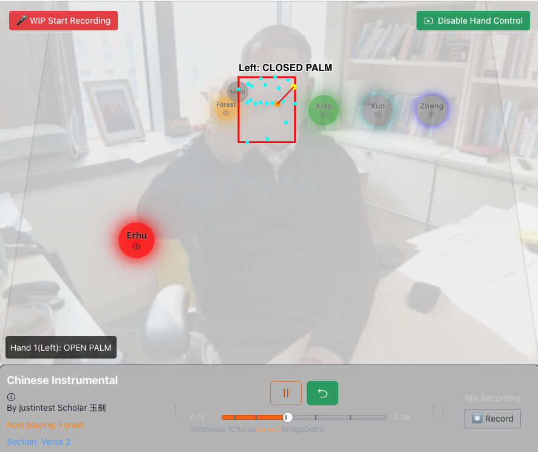
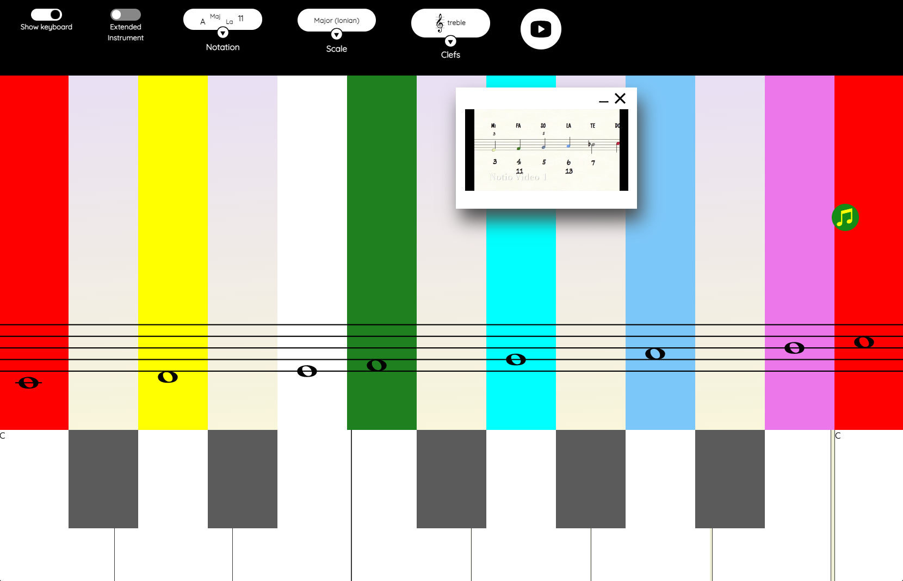
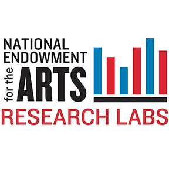
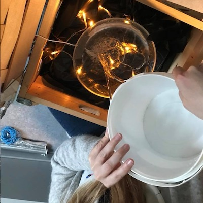
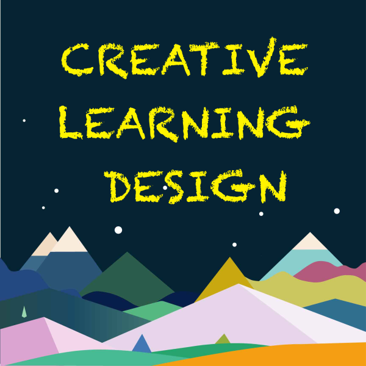
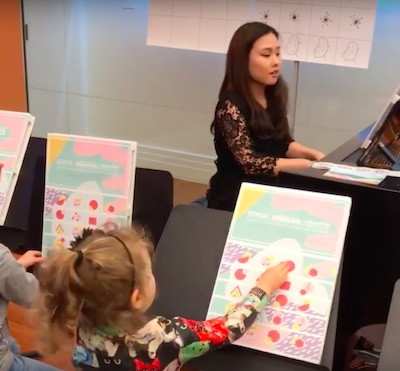

NYU Music Experience Design Lab
Projects
Musical play, research and creative learning. Choose a project to explore its tools, people and ideas.

Experimental Tools
Tuning Partner, Listening Architecture and Rengongfu workshop previews.
Explore listening, making and reflection.

Rén Gōngfu · 人工夫
Reimagining AI for learning and creative expression across cultures

Groove Pizza
Make rhythms with shapes and math.

aQWERTYon
Play melodies and harmonies with your keyboard.

Music Playgrounds
Explore music through paths, cards and layers.

Virtual Piano Duet
Improvise and keep a Melody Notebook.

Spatial Music Lab
Move sounds to shape a spatial mix.

Immersive Music & Media Experiments
Creative sound in space.

Notio Project
Music theorising for creative learning.

NEA Research Lab
Sustainable entrepreneurship in the performing arts.

DigiSus Research
Digital arts in Norwegian kindergartens.

Creative Learning Design
Courses and materials for creative learning.

Workshops
Creative learning and teacher co-design.
No projects match. Try another name or clear your search.